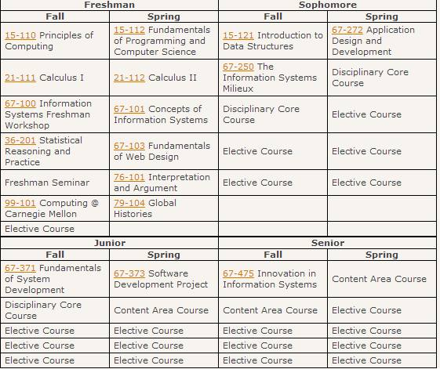

No!
The required course for the fall semester of sophomore year is The IS Milieux, taught by professor Jeria Quesenberry. It will cover some technical skills required as an IS major, as well as core concepts of IS and their applications. The course number is 67-250. Below is the list of required courses by semester for the Information Systems program.
